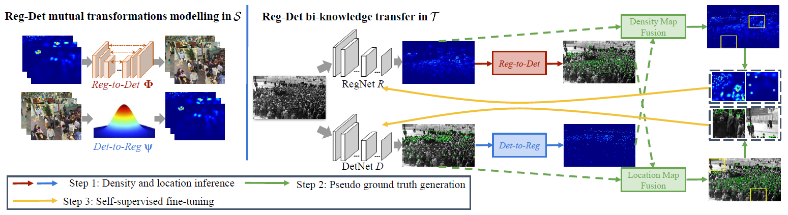
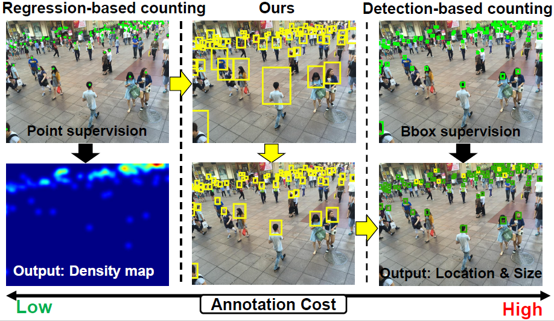
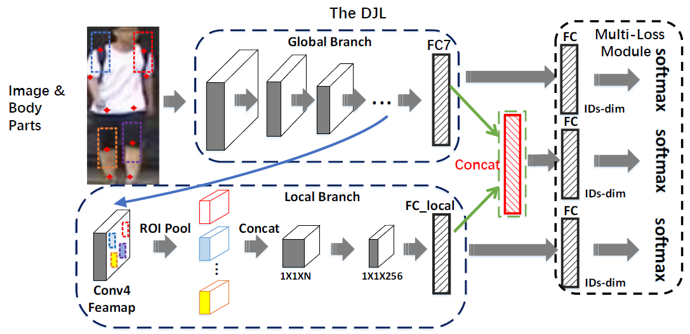

alenaliu17[at]gmail[dot]com
I am currently a Ph.D. student in the College of Computer Science at Sichuan University (SCU), supervised by Prof. Hongyu Yang and Prof. Qijun Zhao. I was a visiting Ph.D. student in 2019-2020 at National Institute of Informatics (NII), advised by Prof. Shin'ichi Satoh and Dr. Zheng Wang. I have also worked with Dr. Miaojing Shi (now at KCL). Before coming to SCU, I received my B.S. degrees from the Information Engineering School from Nanchang University in 2015. For more information, see a copy of my CV (Last update: 3/2022).
My research interests include person detection / recognition and crowd counting.
03/2022 One paper was accepted to CVPR 2022 (Poster).
10/2020 One paper was accepted to ACMMM 2020 (Oral).
10/2019 - 10/2020 Visiting Ph.D. at Shin'ichi Satoh's Lab, NII, working on crowd counting.
06/2019 One paper was accepted to CVPR 2019 (Oral).
01/2018 One paper was accepted to ISBA 2018 (Best Student Paper).
|  |
Towards Unsupervised Crowd Counting via Regression-Detection Bi-knowledge Transfer Yuting Liu, Zheng Wang, Miaojing Shi, Shin'ichi Satoh, Qijun Zhao, Hongyu Yang ACM Multimedia 2020 (Oral, Accept Rate=8.9%) PDF Slide |
|  |
Point in, Box out: Beyond Counting Persons in Crowds Yuting Liu, Miaojing Shi, Qijun Zhao, Xiaofang Wang IEEE Conference on Computer Vision and Pattern Recognition, 2019 (Oral, Accept Rate=5.6%) PDF Slide Poster |
|  |
Pooling Body Parts on Feature Maps For Misalignment Robust Person Re-Identification Yuting Liu, Qijun Zhao, Zhihong Wu International Conference on Identity, Security and Behavior Analysis, 2018 (Best Student Paper) PDF Slide |
Updated on Nov. 2020